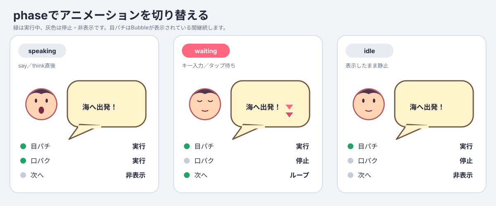

TurboWarp Bubble ブロック利用マニュアル
このマニュアルでは、turbowarp-bubbleをTurboWarpのカスタム拡張機能として使い、SVG本体、文字、キャラクター表情、目パチ、口パク、「次へ」アイコンを組み合わせたBubbleを表示します。

1. 必要な拡張機能
次の3つはすべて「サンドボックスなしで実行」を許可して読み込みます。推奨順はAsset Manager、SVG Text、Bubbleです。実際には、最初のBubble表示より前に依存拡張が揃っていれば構いません。
| 順番 | 拡張機能 | 読み込み先 |
|---|---|---|
| 1 | Asset Manager 0.7.0 | https://cdn.jsdelivr.net/npm/@kubohiroya/turbowarp-asset-manager@0.7.0/dist/asset-manager.js |
| 2 | SVG Text 0.3.0 | https://cdn.jsdelivr.net/npm/@kubohiroya/turbowarp-svg-text@0.3.0/dist/svg-text.js |
| 3 | Bubble 0.1.0 | npm公開後はhttps://cdn.jsdelivr.net/npm/@kubohiroya/turbowarp-bubble@0.1.0/dist/turbowarp-bubble.js |
開発中のBubbleを試す場合は、このリポジトリのdist/turbowarp-bubble.jsをローカルカスタム拡張機能として読み込みます。Bubbleだけを読み込んでも、表示時にAsset ManagerとSVG Textが見つからなければ明示的なエラーになります。
参考：
2. 表情画像を準備する
例ではAssetsという素材用spriteに、次のcostumeを入れます。素材用spriteは画面上で非表示でも構いません。
| costume | Asset Managerへ登録する名前 | 内容 |
|---|---|---|
HeroFace |
HeroFace |
顔、髪、輪郭などのベース。動かす目と口は含めない |
HeroEyesOpen |
HeroEyesOpen |
開いた目だけを描いた透明差分 |
HeroEyesClosed |
HeroEyesClosed |
閉じた目だけを描いた透明差分 |
HeroMouthClosed |
HeroMouthClosed |
閉じた口だけを描いた透明差分 |
HeroMouthOpen |
HeroMouthOpen |
開いた口だけを描いた透明差分 |
Next1 |
Next1 |
「次へ」アイコンの1枚目 |
Next2 |
Next2 |
「次へ」アイコンの2枚目 |
ベース、目、口の画像は同じcanvasサイズと同じ中心位置で作ります。差分画像の背景は透明にしてください。位置やcanvasサイズが異なると、レイヤーを重ねたときに目や口がずれます。
Asset Managerのブロックで各costumeを登録します。
register resource [costume:Assets:HeroFace] as asset [HeroFace]
register resource [costume:Assets:HeroEyesOpen] as asset [HeroEyesOpen]
register resource [costume:Assets:HeroEyesClosed] as asset [HeroEyesClosed]
register resource [costume:Assets:HeroMouthClosed] as asset [HeroMouthClosed]
register resource [costume:Assets:HeroMouthOpen] as asset [HeroMouthOpen]
register resource [costume:Assets:Next1] as asset [Next1]
register resource [costume:Assets:Next2] as asset [Next2]
URL画像を使う場合は、RESOURCE_IDへHTTPS URLを指定します。Bubbleに設定できるのは、Asset Managerへ登録済みでMIME typeがimage/*のアセットだけです。
3. 文字styleを定義する
SVG Textで、Bubbleの文字部分に使う名前付きstyleを定義します。
define text style [dialogue-text]
background [#fff4cc]
text [#332200]
font [Noto Sans JP]
size [100]
align [left]
bubble direction [up]
Bubbleはdialogue-textという名前を参照します。文字styleとBubble styleはruntime状態なので、通常は緑の旗が押されたときに毎回定義します。
SVG Text 0.3.xではblock contract上bubble direction入力が残っていますが、BubbleがsetTextで生成する文字drawableの配置には使われません。Bubbleの配置は次節のset bubble placementで設定します。SVG Textからのdirection削除は、破壊的変更が可能な次版で行います。
4. Bubble styleを定義する
まず、Bubble style名とSVG Textのstyle名を関連付けます。
define bubble style [hero-dialogue] using text style [dialogue-text]
set bubble placement [up-right] for bubble style [hero-dialogue]
set bubble distance [12] for bubble style [hero-dialogue]
set bubble visual style [NORMAL] for bubble style [hero-dialogue]
set bubble tail length [18] for bubble style [hero-dialogue]
set bubble offset x [0] y [0] scale [100] % for bubble style [hero-dialogue]
Actor相対と背景相対のplacement

Actor相対の16方向は、各方向をActor、Bubble外形、tail、文字を含む独立したミニシーンで示しています。三角形tailの基部2点は実際の本体border上にあり、本体polygonとのJSClipper union後の単一pathを描くため、接合部に内部border線は残りません。
背景相対3図はStage外枠、安全領域、Bubble外形寸法、水平中央線、基準辺／中心を示します。外形はBubble側の共有renderBubbleSvgで生成しており、TurboWarp Editorで本体drawableを生成するrendererと同じです。
Actor相対では、Actor中心からBubble全体の中心へ向かう方向を指定します。menuには次の16正規方向があります。
up / up-up-right / up-right / right-up-right
right / right-down-right / down-right / down-down-right
down / down-down-left / down-left / left-down-left
left / left-up-left / up-left / up-up-left
north、north-northeast、northeastなどのcompass aliasも直接入力またはreporterから指定できます。数値はScratch方向と同じ0〜360度で、0は上、90は右、180は下、270は左、360は0へ正規化されます。任意角度は16方向へ丸めません。placementを設定しないstyleはup-rightになります。
背景相対はActorから生える方向を持たず、Stage安全領域へ配置します。
| placement | 配置 |
|---|---|
HEADER_LIKE |
Stage安全領域上部、水平中央 |
CENTER |
Stage安全領域の水平・垂直中央 |
FOOTER_LIKE |
Stage安全領域下部、水平中央 |
背景相対placementはActorの座標、bounds、可視性に依存しません。Stageからsay／thinkを実行する場合も、この3値のいずれかを設定します。背景相対のBubble bodyにはActorを指すtailを描画しません。
Actorとの距離、tail、本体の位置・拡大率

distance（既定12）はActor boundsからtail先端までの距離です。Actor boundsとは、描画済みActorをStage座標で囲むAABB（上下左右のbounding box）です。tail length（既定18）は通常位置におけるBubble borderからtail先端までの基準長です。offset x/y/scale（既定[0, 0, 100]）は、xが右正、yが上正、scaleが百分率です。[10, -10, 120]なら、本体を右10・下10へ補正し、120%にします。
scaleは外形だけでなく、SVG Textの文字、表情ベース・目パチ・口パク、次へアイコン、内部余白へ一体で適用されるため、表示上のフォントサイズも同じ比率で変わります。scaleだけを変更すると、本体中心を拡大半径分だけActorから離してActor側の間隔を維持します。x/y offsetはその後に加算し、tail先端を固定したまま本体borderとのunionを再生成するため、offset後のtail実長は基準値から変化します。
Stage端では、拡大後のBubble全体を画面内へ収めるクランプが優先されるため、指定距離を保てない場合があります。背景相対のHEADER_LIKE／CENTER／FOOTER_LIKEでは、これらのActor相対設定を使用しません。
幅・自動改行・禁則処理

図の改行結果はproductionのwrapTextを直接実行して生成しています。@cto.af/linebreakがUnicode UAX #14の改行候補を返し、Intl.Segmenterの書記素境界で絞り込んだ後、実測幅の上限に収まる最後の候補を選びます。句読点、閉じ括弧、小書き仮名、長音、結合emojiの途中で不自然に分割しません。
Bubble visual styleの形状例

形状候補はNORMAL、THINKING、DREAMING、YELLING、OFF_PANEL、WAVY、WHISPERING、ANNOUNCEMENT、NARRATION、NO_BUBBLEです。次のblockでBubble styleごとに選択します。
set bubble visual style [YELLING] for bubble style [hero-dialogue]
図とTurboWarp Editorの本体drawableはBubble側の共有renderBubbleSvgから生成しています。三角形tailを持つ形状はplatener/jsclipperによる本体との和集合です。THINKING／DREAMINGは丸trailのためunion対象外です。Actor相対ではActorを向くtailを生成し、背景相対ではtailを付けません。NO_BUBBLEでは本体drawableを非表示にして文字・表情などだけを表示します。
visual styleを省略した場合はNORMALです。本体drawableは文字・portraitより先に生成して背面へ置きます。close this bubble、対象sprite／cloneの停止、runtime破棄時には、本体drawableとBubbleが所有するSVG skinも解放します。
NEGATIVEはfill colorとborder colorで表現できるため独立styleにはしません。orientationとsegmentsも公開入力にせず、幅、フォント、文字数、禁則処理後の行数から外形寸法を自動計算する方針です。
続けて、表情レイヤーと入力待ちアイコンを設定します。
set portrait base [HeroFace] for bubble style [hero-dialogue]
set blink frames [HeroEyesOpen,HeroEyesClosed]
every [0.4] seconds for bubble style [hero-dialogue]
set talk frames [HeroMouthClosed,HeroMouthOpen]
every [0.1] seconds for bubble style [hero-dialogue]
set advance frames [Next1,Next2]
every [0.2] seconds for bubble style [hero-dialogue]
ASSETSはカンマ区切りのAsset Managerアセット名です。名前の前後の空白は除去されます。アセット名自体にカンマは使用できません。
- 目パチと口パクは1枚以上指定できます。1枚だけなら表示は固定されます。
- 「次へ」はループが分かるよう2枚以上必要です。
SECONDSは0より大きい秒数です。ASSETSを空にすると、そのアニメーション設定を解除します。- 表情ベースを空にするとportrait全体を解除します。
5. セリフを表示して入力を待つ
sayまたはthinkはBubbleを表示するとすぐ次のブロックへ進み、初期phaseはspeakingになります。
say [海へ出発！] with bubble style [hero-dialogue]
set this bubble phase [waiting]
wait until <space key pressed? or mouse down?>
close this bubble
waitingに変えると口パクが止まり、「次へ」アイコンがループします。Bubble自身はキー入力、タップ、文字送り完了を判定しません。wait untilなど、通常のScratch/TurboWarpブロックで待ち、入力成立後にclose this bubbleを実行してください。
音声再生や別の文字送り処理と組み合わせる場合は、それらが完了した時点でwaitingへ切り替えます。

アニメーションGIFを再生できない環境では、次の比較図で各phaseを確認できます。

6. phaseの使い分け
| phase | 目パチ | 口パク | 「次へ」アイコン | 主な用途 |
|---|---|---|---|---|
speaking |
実行 | 実行 | 非表示 | セリフ表示中、音声再生中 |
waiting |
実行 | 停止・非表示 | ループ | キー入力やタップ待ち |
idle |
実行 | 停止・非表示 | 停止・非表示 | Bubbleを表示したまま静止 |
set this bubble phase [PHASE]は、呼び出したsprite、clone、またはStageが所有するBubbleだけを変更します。先にsayまたはthinkを実行していない場合はエラーになります。
7. sayとthink
say [MESSAGE] with bubble style [STYLE]
think [MESSAGE] with bubble style [STYLE]
どちらも同じvisual style、表情レイヤー、placement、phase制御を使えます。say／thinkだけで形状を固定せず、set bubble visual styleでNORMAL、THINKINGなどを明示的に選びます。Composition APIのsurfaceにはsay／thinkのkindも渡されるため、独自hostではkindに応じた追加表現も可能です。
同じsprite、clone、またはStageで新しいsay／thinkを実行すると、以前のBubbleをtimerやdrawableごと破棄してから置き換えます。Stageでは背景相対placementだけを使用できます。
8. cloneで使う
Bubble styleの定義は拡張機能内で共有されますが、表示中のBubbleはsprite／cloneごとに所有されます。
- 元spriteで、緑の旗が押されたときにアセットとstyleを1回定義します。
- 各clone自身から
sayまたはthinkを実行します。 - phase変更とcloseも、表示したのと同じcloneから実行します。
cloneが停止・削除された場合は、そのtargetに属するtimer、SVG Text skin、drawableが自動解放されます。
9. ブロック一覧
| ブロック | 説明 |
|---|---|
define bubble style [STYLE] using text style [TEXT_STYLE] |
Bubble styleを定義または再定義する |
set bubble placement [PLACEMENT] for bubble style [STYLE] |
Actor相対方向・角度、または背景相対領域を設定する |
set bubble distance [DISTANCE] for bubble style [STYLE] |
Actor boundsからtail先端までの距離を設定する |
set bubble visual style [VISUAL_STYLE] for bubble style [STYLE] |
Bubble本体のSVG形状を10種類から設定する |
set bubble tail length [LENGTH] for bubble style [STYLE] |
Bubble borderからtail先端までの基準長を設定する |
set bubble offset x [X] y [Y] scale [SCALE] % for bubble style [STYLE] |
本体位置と、文字を含む全体のscaleを設定する |
set portrait base [ASSET] for bubble style [STYLE] |
portraitのベース画像を設定する |
set blink frames [ASSETS] every [SECONDS] seconds for bubble style [STYLE] |
目パチ差分と間隔を設定する |
set talk frames [ASSETS] every [SECONDS] seconds for bubble style [STYLE] |
口パク差分と間隔を設定する |
set advance frames [ASSETS] every [SECONDS] seconds for bubble style [STYLE] |
waiting中の「次へ」アニメーションを設定する |
say [MESSAGE] with bubble style [STYLE] |
speaking phaseでsay表示を開始・置換する |
think [MESSAGE] with bubble style [STYLE] |
speaking phaseでthink表示を開始・置換する |
set this bubble phase [PHASE] |
自分のBubbleをspeaking、waiting、idleへ変更する |
close this bubble |
自分のBubbleと所有resourceを解放する |
Bubble version |
Bubble実装versionを返す |
10. よくあるエラー
| 状況 | 原因と対処 |
|---|---|
| Asset Managerを要求するエラー | Asset Manager 0.7.xをサンドボックスなしで読み込む |
| SVG Textを要求するエラー | SVG Text 0.3.xをサンドボックスなしで読み込む |
bubble style is not defined |
define bubble styleを先に実行する。緑の旗の再実行時も再定義する |
| image assetが未登録 | register resource ... as asset ...の完了後にBubbleを表示する |
| assetが画像ではない | MIME type of asset [NAME]でimage/*か確認する |
| advance framesが1枚 | 2枚以上にするか、空にしてadvance表示を解除する |
| frame intervalエラー | SECONDSを0より大きい有限値にする |
| StageからActor相対表示した | placementをHEADER_LIKE、CENTER、FOOTER_LIKEにする |
| placementが不正 | 16方向、alias、0〜360度、背景相対3値のいずれかを指定する |
| 目や口がずれる | ベースと全差分のcanvasサイズ、中心、透明領域を揃える |
11. 自動解放されるタイミング
次の場合、Bubbleが所有するtimer、SVG Text skin、renderer drawableは自動的に解放されます。
close this bubble- 同じsprite／cloneで次の
sayまたはthinkを実行したとき - 対象sprite／cloneが停止したとき
- 緑の旗によるproject開始
- projectの全停止
- TurboWarp runtimeの破棄
Asset Managerへ登録したアセット自体はBubbleの所有物ではありません。不要になった登録画像をメモリから削除する場合は、Bubbleを閉じた後にAsset Managerのdelete asset [NAME] from memoryを使います。
12. マニュアル画像の再生成
図とGIFはリポジトリ内のスクリプトから再生成できます。GIF生成にはImageMagickのmagickコマンドが必要です。
pnpm docs:render
pnpm docs:check
docs:checkは、SVGのviewBox、production renderer／wrapText由来marker、全visual style、GIFの寸法・16フレーム・ループ設定、マニュアルから画像と全15ブロックへの参照、およびPages用HTMLが最新であることを検証します。